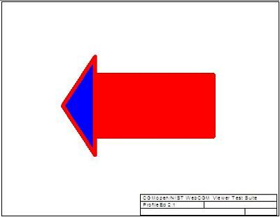
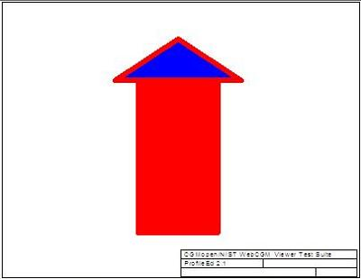
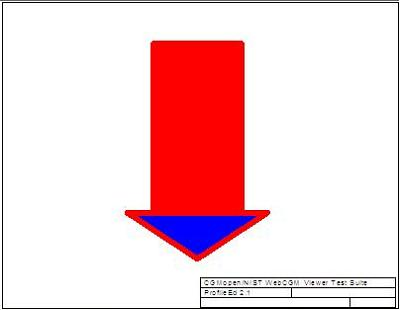

| Source CGM (Replace) | Rotated APS 180° (Replace) | Rotated APS 90° (Replace) |
|---|---|---|
 |
 |
| Source CGM (Combine) | Rotated APS 180° (Combine) | Rotated APS 90° (Combine) |
|---|---|---|
 |
| Type | Transform 1 | CGM Should look like | Transform 2 | CGM Should look like | Get Transform | Test Result |
| Replace | Rotated APS 180° (Replace) | Rotated APS 90° (Replace) | Fail/Success | |||
| Combine | Rotated APS 180° (Combine) | Rotated APS 90° (Combine) | Fail/Success |